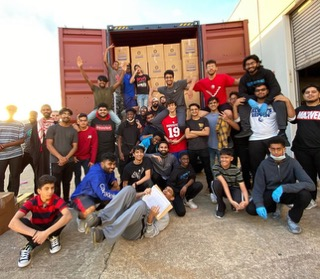
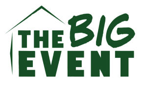

Helping Hand for Relief and Development
I volunteered with donated-item logistics by helping load freight containers with supplies intended for distribution to communities in need across developing countries.
Visit organizationService
Service has helped shape how I think about leadership, responsibility, and using my skills to support people beyond the workplace.
Current Service

I volunteered with donated-item logistics by helping load freight containers with supplies intended for distribution to communities in need across developing countries.
Visit organization
I participated in Texas A&M's community-wide volunteer event where Aggies support local residents and strengthen the surrounding community through service.
Visit organizationFuture Initiatives
I want to help create a programming mentorship program for high school and college students at local Houston mosques, giving students exposure to coding, technology careers, and corporate opportunities.
Learn moreI plan to support outreach efforts that assist Houston neighborhoods with clothing, food, first aid, and practical community resources.
Learn more